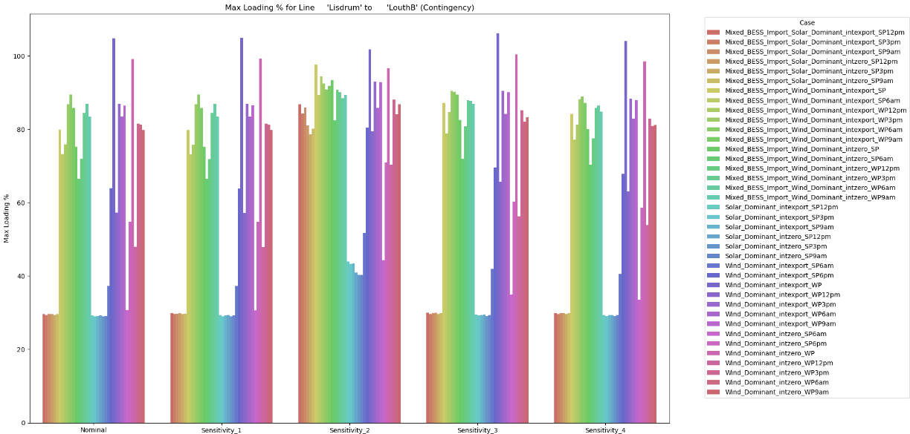
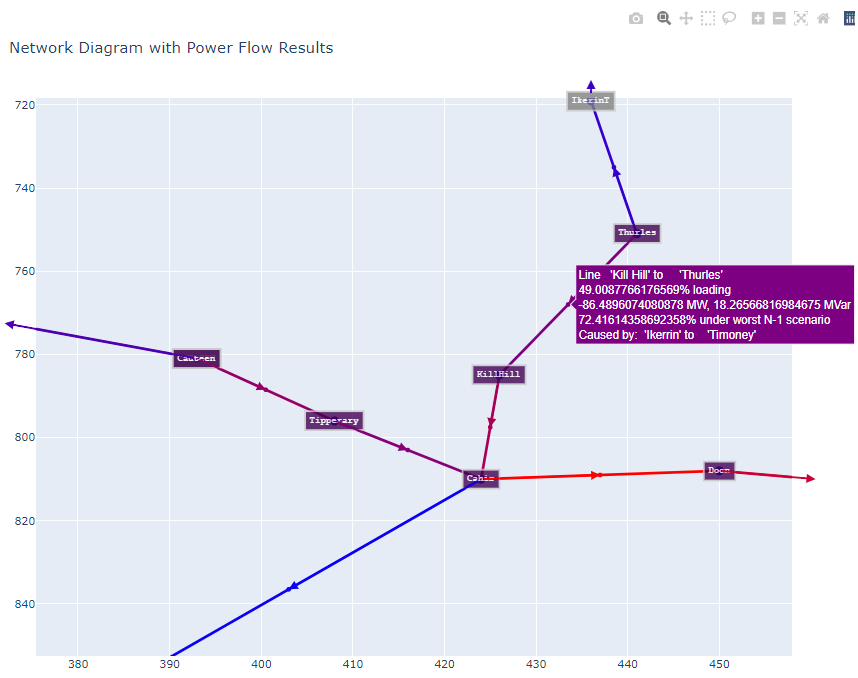

Power Flow and Contingency Outline#
The tool is built and regularly updated using public sources including but not limited to Eirgrid’s Ten Year Transmission Forecast Statement (TYTFS). The model operates in a simple manner for powerflow analysis, utilizing the open source tool PandaPower and other python functionality for data processing. It can easily be updated to reflect a range of scenarios and study years in order to meet the needs of the user. At the moment it only models ROI, does not model any NI network but can be expanded as necessary to fit further needs.
Outputs can come in many forms, line loading and bus results can be produced by csv files in “Results” folder. Various plots are also provided for a visual representation of the load flow, worst case contingency and test energy storage net impact. Load flow is solved using ACPF newton raphson using DC initialization. Some of the practical applications are senstivity testing with and without network reinforcements, connection method comparisons, and general loadflow injection screening studies.
Determining optimal system wind and solar capacity factors to obtain convergence
In order to build cases for screening, it’s important to first determine what the maximum tollerable wind and solar capacity factors are that will still allow each case to solve and converge properly. The goal being to find the levels of renewable energy dispatch that allow the system to converge for each unique case. Each unique case is meant to represent a slice of time from an average winter day and average summer day, taking the typical scaled demand for that time of day and meeting it with the maximum amount of wind or solar generation that is statistically likely to occur at that time. This is informed by assessing hourly dispatch data from ECP constraint reports, Tomorrow’s Energy Scenarios (TES), and other data from Eirgrid and ESB. The below screenshot is an example output that feeds into the next stages as the starting point capacity factors used for each case under study.
Summary of Successful Capacity Factors:
Winter Season:
BESS_Import_Wind_Dominant_intzero_W6am: Wind CF = 0.76, Solar CF = 0, Interconnector CF = 0
BESS_Import_Wind_Dominant_intexport_W6am: Wind CF = 0.79, Solar CF = 0, Interconnector CF = -1
Wind_Dominant_intzero_W6am: Wind CF = 0.62, Solar CF = 0, Interconnector CF = -1
Wind_Dominant_intexport_W6am: Wind CF = 0.63, Solar CF = 0, Interconnector CF = -
BESS_Import_Wind_Dominant_intexport_W9am: Wind CF = 0.86, Solar CF = 0.1, Interconnector CF = -
BESS_Import_Wind_Dominant_intzero_W9am: Wind CF = 0.82, Solar CF = 0.1, Interconnector CF = 0
Wind_Dominant_intzero_W9am: Wind CF = 0.66, Solar CF = 0.1, Interconnector CF =
Wind_Dominant_intexport_W9am: Wind CF = 0.72, Solar CF = 0.1, Interconnector CF = -1
BESS_Import_Wind_Dominant_intexport_W12pm: Wind CF = 0.78, Solar CF = 0.3, Interconnector CF = -1
BESS_Import_Wind_Dominant_intzero_W12pm: Wind CF = 0.74, Solar CF = 0.3, Interconnector CF = 0
Wind_Dominant_intzero_W12pm: Wind CF = 0.49, Solar CF = 0.3, Interconnector CF = 0
Wind_Dominant_intexport_W12pm: Wind CF = 0.54, Solar CF = 0.3, Interconnector CF = -1
BESS_Import_Wind_Dominant_intexport_W3pm: Wind CF = 0.88, Solar CF = 0.1, Interconnector CF = -1
BESS_Import_Wind_Dominant_intzero_W3pm: Wind CF = 0.84, Solar CF = 0.1, Interconnector CF = 0
Wind_Dominant_intexport_W3pm: Wind CF = 0.73, Solar CF = 0.1, Interconnector CF = -1
Wind_Dominant_intzero_W3pm: Wind CF = 0.68, Solar CF = 0.1, Interconnector CF = 0
Wind_Dominant_intzero_W6pm: Wind CF = 0.9, Solar CF = 0, Interconnector CF = 0
Wind_Dominant_intexport_W6pm: Wind CF = 0.97, Solar CF = 0, Interconnector CF = -1
Summer Season:
BESS_Import_Wind_Dominant_intexport_S6am: Wind CF = 0.58, Solar CF = 0.2, Interconnector CF = -1
BESS_Import_Wind_Dominant_intzero_S6am: Wind CF = 0.54, Solar CF = 0.2, Interconnector CF = 0
Wind_Dominant_intexport_S6am: Wind CF = 0.33, Solar CF = 0.2, Interconnector CF = -1
Wind_Dominant_intzero_S6am: Wind CF = 0.29, Solar CF = 0.2, Interconnector CF =
BESS_Import_Solar_Dominant_intexport_S9am: Wind CF = 0.2, Solar CF = 0.96, Interconnector CF = -1
BESS_Import_Solar_Dominant_intzero_S9am: Wind CF = 0.2, Solar CF = 0.90, Interconnector CF = 0
Solar_Dominant_intexport_S9am: Wind CF = 0.2, Solar CF = 0.52, Interconnector CF = -1
Solar_Dominant_intzero_S9am: Wind CF = 0.2, Solar CF = 0.47, Interconnector CF = 0
BESS_Import_Solar_Dominant_intexport_S12pm: Wind CF = 0.2, Solar CF = 0.97, Interconnector CF = -1
BESS_Import_Solar_Dominant_intzero_S12pm: Wind CF = 0.2, Solar CF = 0.91, Interconnector CF = 0
Solar_Dominant_intexport_S12pm: Wind CF = 0.2, Solar CF = 0.53, Interconnector CF = -1
Solar_Dominant_intzero_S12pm: Wind CF = 0.2, Solar CF = 0.48, Interconnector CF = 0
BESS_Import_Solar_Dominant_intexport_S3pm: Wind CF = 0.2, Solar CF = 0.94, Interconnector CF = -1
BESS_Import_Solar_Dominant_intzero_S3pm: Wind CF = 0.2, Solar CF = 0.88, Interconnector CF = 0
Solar_Dominant_intexport_S3pm: Wind CF = 0.2, Solar CF = 0.51, Interconnector CF = -1
Solar_Dominant_intzero_S3pm: Wind CF = 0.2, Solar CF = 0.46, Interconnector CF = 0
BESS_Import_Wind_Dominant_intexport_S6pm: Wind CF = 0.68, Solar CF = 0.25, Interconnector CF = -1
BESS_Import_Wind_Dominant_intzero_S6pm: Wind CF = 0.64, Solar CF = 0.25, Interconnector CF =
Wind_Dominant_intexport_S6pm: Wind CF = 0.52, Solar CF = 0.2, Interconnector CF = -1
Wind_Dominant_intzero_S6pm: Wind CF = 0.47, Solar CF = 0.2, Interconnector CF = 0
The above cases are not comprehensive of every possible dispatch scenario likely to be encountered in a sample year. Instead, they represent points with varying demand in order to help the user understand both the system response to each dispatch and the likelihood of each cases’ occurence according to the wind and solar capacity factors. By cross referencing the hour of each case against the ECP constraint wind and solar capacity factors, we can determine the percentage of hours at that time in which both the wind and solar capacity factors were higher than the levels specified in each case. This is one method to determine how rare or common each case is, which helps the user weigh the impact of any overloads noted in the results. Example percentages noted here:
BESS_Import_Solar_Dominant_intexport_S12pm: Summer = 0.00%, Winter = 0.00%
BESS_Import_Solar_Dominant_intzero_S12pm: Summer = 8.41%, Winter = 0.00%
Solar_Dominant_intexport_S12pm: Summer = 34.11%, Winter = 1.90%
Solar_Dominant_intzero_S12pm: Summer = 36.99%, Winter = 2.86%
BESS_Import_Wind_Dominant_intexport_W3pm: Summer = 8.18%, Winter = 5.21%
BESS_Import_Wind_Dominant_intzero_W3pm: Summer = 10.90%, Winter = 5.77%
Wind_Dominant_intexport_W3pm: Summer = 14.99%, Winter = 8.56%
Wind_Dominant_intzero_W3pm: Summer = 16.35%, Winter = 9.12%
The user also has the ability to list any network element in order to monitor changes to the power flow result caused by the varied dispatches comparing different sensitiities. Sensitivities can be adjusted by the user to compare generator locations, network reinforcements and many more. The plot below demonstrates loading percentages on the monitored element for each of the unique cases where each sensitivity scenario captures an example PV project at differerent nodes. Line loading percentages under the worst case contingency are plotted, but other system result metrics such as bus voltage can be chosen as well:

Detailed intact powerflow, contingency and BESS nodal results
The user can specify which sensitivities they would like to have run in order to compare the results with/without certain elements, network upgrades, or generator sizes. Allowing the user to gage the net impact of select changes and easily compare future options. The amount of unique cases can be reduced or increased as necessary. Users can then review comprehensive bus, line, and transformer intact and contingency results.
Various power flow calculation methods are attempted each time, although typically success is reached by utilizing Newton Raphson initialized in a DC manner with Q limits on each generator enforced.
The results allow the user to compare the worst case contingency to the latest ECP constraint reports. This enables the user to make development decisions that are backed by the most recent load flows in the time periods between new ECP constraint reports. It also has a faster turnaround time compared to other reports and studies completed within the industry.

For each successful case, the user has the option to create a network diagram to display the power flow results. Plotly is used to display these results from PandaPower. This sample shows output from a wind dominant dispatch with BESS units set to zero in the summer season with peak demand in 2031.
By hovering over the midpoint of each line, the user can determine the line name, intact loading percentage, real and reactive power, worst case loading percentage and the element which causes that worst case overload. Each line is color coded based on intact line loading, turning more red-tinted as the loading increases and blue as the line loading decreases. In the above example, Cahir-Doon experiences a line loading of roughly 100%. Arrows on each line display the real power flow direction. By hovering over each node, results from the test BESS net impact are found, allowing the user to quickly compare which nodes would have a better net loading impact by having a charging or discharging generator connected at the node.
For any specific case, or groups of cases, shift factor analysis can be performed on each worst case contingency. Not only does this provide a comprehensive view of the system as to where additional generation or demand can be placed to have minimal impact on loading, but it also provides a view as to which nodes are likely to be prioritized when curtailment allocation needs to take place to alleviate transmission constraint. This clarity on which constraints become “governing” is important as the TSO shifts its perspective as to which network upgrades will be prioritized and renewable generation connecting ahead of select upgrades.
Further options and additional functionality
Additional functionality includes but is not limited to:
Nodal hosting capacity analysis
Generator connection method option comparison
Network reinforcement sensitivities
Contingency Analysis
Further options under development:
Integration with ChatGPT or Llama for comprehensive queries
Advantages and Disadvantages:
Significantly cheaper than TARA or PSSE.
More easily adaptable to various python libraries and packages.
Minimal technical or power system knowledge required.
While this tool is not perfect, it provides a quick, light-weight screening for HV transmission nodes in the Irish system. The background data feeding into this tool is reviewed, aggregated, and compared against the latest system information provided publicly by Eirgrid and ESB.